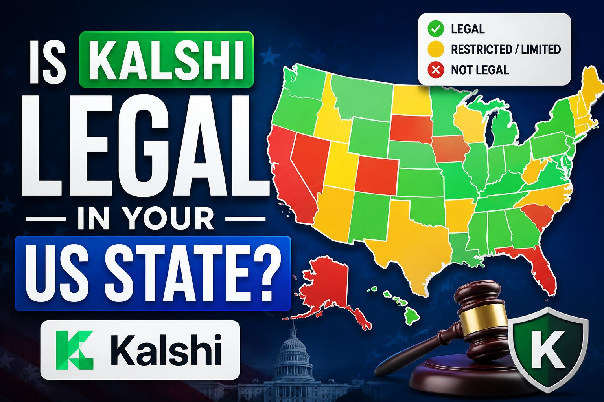

Is Kalshi Legal in Your US State?
Inside the US, Kalshi's legal status isn't decided city by city — no US city or county regulates prediction markets on its own. It comes down to two levels: a federal Designated Contract Market registration from the CFTC that applies nationwide, and a fast-moving, state-by-state fight over whether Kalshi's sports event contracts count as unlicensed gambling under state law. Search your city below and it'll resolve to your state's current status; scroll to browse all 50 states plus DC directly.

Quick answer: where things stand right now
Federal baseline: Kalshi is a CFTC-registered Designated Contract Market, which authorizes its event contracts in all 50 states at the federal level. Non-sports contracts (politics, weather, economics, and similar) are generally unaffected by the disputes below, which center almost entirely on sports event contracts.
Blocked or restricted at the state level: Nevada (cease-and-desist and adverse federal rulings restricting sports contracts), Michigan (state-court temporary restraining order blocking sports contracts), Maryland (district court denied Kalshi's injunction, enforcement currently paused pending a Fourth Circuit appeal), and Minnesota (state law making prediction-market trading a felony as of August 1, 2026).
Actively contested (cease-and-desist orders, lawsuits, or injunctions in progress, with outcomes still being litigated): New York, Connecticut, Illinois, Arizona, Massachusetts, New Jersey, Wisconsin, Rhode Island, New Mexico, Montana, Washington, Ohio, and Tennessee. Some of these currently favor continued Kalshi access under federal court rulings (e.g. New Jersey, Tennessee, Arizona); others (New York) have gone against Kalshi at the district-court level but remain under appeal or unenforced pending further litigation. Status can flip on a single ruling.
Open, no known state action found: the remaining states and DC — federal CFTC access applies with no state-level dispute identified as of this writing.
This is genuinely one of the fastest-moving legal fights in US fintech right now — new cease-and-desist letters, lawsuits, and rulings are landing every few weeks, several rulings directly contradict each other across circuits, and market participants increasingly expect a Supreme Court review before the end of 2026. Treat every row below as a snapshot, not a final answer, and check current litigation before relying on it. Search for your state legality directly below, or filter by status.
- ALAlabamaOpen
Is Kalshi legal in Alabama? No state cease-and-desist or lawsuit against Kalshi found — federal CFTC access applies.
- AK
- AZArizonaContested
Is Kalshi legal in Arizona? Arizona pursued criminal enforcement against Kalshi for operating unlicensed gambling; a federal judge halted that case at the CFTC's request on April 10, 2026, and the CFTC has separately sued the state. Currently favorable to Kalshi, but unresolved.
- AR
- CACaliforniaOpen
Is Kalshi legal in California? No known state-level cease-and-desist or lawsuit found — federal CFTC access applies.
- CO
- CTConnecticutContested
Is Kalshi legal in Connecticut? The Department of Consumer Protection issued a cease-and-desist order in December 2025; Kalshi sued in federal court arguing CFTC preemption, and the CFTC has since sued the state too. Sports contracts still offered as of this writing, but unresolved.
- DE
- DCWashington, DCOpen
Is Kalshi legal in Washington, DC? No known enforcement action found — federal CFTC access applies, though DC's unique federal-district status means this is worth re-checking directly.
- FLFloridaOpen
Is Kalshi legal in Florida? No enforcement action taken; the platform remains accessible to Florida residents as of mid-2026.
- GAGeorgiaOpen
Is Kalshi legal in Georgia? No filed enforcement actions found; the platform remains accessible as of mid-2026.
- HIHawaiiContested
Is Kalshi legal in Hawaii? Flagged by trackers as unclear pending 2026 legislative bills that could either codify or restrict prediction-market access, rather than a specific enforcement action — worth checking current state guidance.
- ID
- ILIllinoisContested
Is Kalshi legal in Illinois? The Illinois Gaming Board sent Kalshi a cease-and-desist letter, Governor Pritzker signed an order restricting state employees' use of prediction markets, and the CFTC sued Illinois on April 2, 2026 to block the state's enforcement posture. Unresolved.
- IN
- IA
- KS
- KYKentuckyContested
Is Kalshi legal in Kentucky? Flagged by trackers as unclear pending a 2026 legislative bill in active committee rather than a specific enforcement action — worth checking current state guidance.
- LALouisianaOpen
Is Kalshi legal in Louisiana? No known state-level action — federal CFTC access applies.
- ME
- MDMarylandRestricted
Is Kalshi legal in Maryland? Kalshi sued to block a state cease-and-desist, but a district judge denied Kalshi's preliminary injunction in 2025, finding no federal preemption. Maryland has since agreed to pause enforcement while the ruling is on appeal to the Fourth Circuit, but the underlying decision currently favors the state.
- MAMassachusettsContested
Is Kalshi legal in Massachusetts? One of several states with an active preliminary-injunction dispute over sports event contracts; courts have generally favored continued platform access so far, but the underlying case is unresolved.
- MIMichiganRestricted
Is Kalshi legal in Michigan? Attorney General Dana Nessel sued Kalshi in March 2026 seeking a permanent injunction; an Ingham County Circuit Court temporary restraining order issued June 30, 2026 currently bars Kalshi from offering or advertising sports event contracts in the state.
- MNMinnesotaBlocked
Is Kalshi legal in Minnesota? No — state law makes prediction-market trading a felony as of August 1, 2026, the strictest state-level treatment found anywhere in the country.
- MSMississippiOpen
Is Kalshi legal in Mississippi? No known state-level action — federal CFTC access applies.
- MO
- MTMontanaContested
Is Kalshi legal in Montana? Kalshi sued Montana's attorney general and gambling regulators in April 2026 after the state issued a second cease-and-desist letter, alleging Montana broke an earlier non-enforcement agreement. Unresolved.
- NE
- NVNevadaRestricted
Is Kalshi legal in Nevada? The Gaming Control Board issued a cease-and-desist in March 2025; a federal district court ruled for Nevada in November 2025, and the Ninth Circuit cleared the way for the state's restriction in March 2026 while an appeal proceeds. Sports markets are currently restricted for Nevada residents.
- NHNew HampshireOpen
Is Kalshi legal in New Hampshire? No known state-level action — federal CFTC access applies.
- NJNew JerseyContested
Is Kalshi legal in New Jersey? A federal district court sided with Kalshi, and on April 6, 2026 the Third Circuit affirmed 2-1 that New Jersey cannot enforce its gambling laws against Kalshi's sports contracts, finding them CFTC-regulated swaps. Currently favorable to Kalshi, but New Jersey may seek further review.
- NMNew MexicoContested
Is Kalshi legal in New Mexico? The state attorney general sued Kalshi over unlicensed gaming violations reportedly tied to concerns about tribal gaming operations. Unresolved.
- NYNew YorkContested
Is Kalshi legal in New York? A federal judge denied Kalshi's injunction bid on July 8, 2026, ruling that New York's gambling law is not preempted by federal commodities law — a loss for Kalshi in this state specifically, though as of this writing Kalshi has continued to operate while the CFTC's separate suit against New York proceeds.
- NCNorth CarolinaOpen
Is Kalshi legal in North Carolina? No known state-level action — federal CFTC access applies.
- NDNorth DakotaOpen
Is Kalshi legal in North Dakota? No known state-level action — federal CFTC access applies.
- OHOhioContested
Is Kalshi legal in Ohio? The Ohio Casino Control Commission proposed a $5 million fine against Kalshi for "unlawful gaming," and the dispute is on appeal to the Sixth Circuit with briefing ongoing through mid-2026. Unresolved.
- OK
- OR
- PAPennsylvaniaOpen
Is Kalshi legal in Pennsylvania? No confirmed state-specific enforcement action found; the Third Circuit's April 2026 preemption ruling in the neighboring New Jersey case strengthens the federal argument for platforms operating in this circuit.
- RIRhode IslandContested
Is Kalshi legal in Rhode Island? The state attorney general sued Kalshi and Polymarket in state court in May 2026; the CFTC has since moved to intervene. Unresolved.
- SCSouth CarolinaOpen
Is Kalshi legal in South Carolina? No known state-level action — federal CFTC access applies.
- SDSouth DakotaOpen
Is Kalshi legal in South Dakota? No known state-level action — federal CFTC access applies.
- TNTennesseeContested
Is Kalshi legal in Tennessee? The Sports Wagering Council issued a cease-and-desist in January 2026, but a federal court froze it and later converted the order into a preliminary injunction blocking state enforcement, finding Kalshi likely to succeed on the merits. Currently favorable, but not final.
- TXTexasOpen
Is Kalshi legal in Texas? No state enforcement action filed as of this writing, though officials have flagged the topic for legislative review — federal CFTC access currently applies.
- UT
- VT
- VA
- WAWashingtonContested
Is Kalshi legal in Washington? Attorney General Nick Brown sued Kalshi in March 2026, alleging violations of the state Gambling Act and Consumer Protection Act over sports, election, and event contracts. Unresolved.
- WVWest VirginiaOpen
Is Kalshi legal in West Virginia? No known state-level action — federal CFTC access applies.
- WIWisconsinContested
Is Kalshi legal in Wisconsin? Attorney General Josh Kaul sued Kalshi (and other prediction markets) in April 2026, alleging sports-related event contracts amount to illegal sports betting. Unresolved.
- WY
No states match that search.
Frequently asked questions
- Is Kalshi legal in the United States?
- At the federal level, yes — Kalshi is a CFTC-registered Designated Contract Market covering all 50 states. State law is the open question, especially for sports event contracts, and it varies by state as shown above. Non-sports categories (politics, economics, weather) are largely untouched by these disputes.
- Does city or county law affect this?
- No. This is regulated federally and at the state level, not by cities or counties. Legality doesn't change block by block within a state — only across state lines.
- Which states currently restrict Kalshi?
- Nevada, Michigan, and Maryland currently have adverse rulings or orders restricting Kalshi's sports contracts, and Minnesota's felony law takes effect August 1, 2026. New York, Connecticut, Illinois, Arizona, Massachusetts, New Jersey, Wisconsin, Rhode Island, New Mexico, Montana, Washington, Ohio, and Tennessee all have active litigation or cease-and-desist orders with outcomes still being decided.
- Why are states and the CFTC fighting over Kalshi?
- It's a jurisdictional dispute: Kalshi argues its sports contracts are CFTC-regulated swaps beyond state reach, while state regulators argue they're unlicensed sports betting under state law. Federal courts have split by circuit — the Third Circuit sided with Kalshi in New Jersey, while district judges sided with the state in New York and Maryland — which is why market participants increasingly expect the Supreme Court to weigh in.
State-level information is drawn from court filings, state regulator announcements, and legal-tracker reporting current as of late July 2026 (sources include coverage from RotoWire, Lines.com, CBS Sports, Sports Betting Dime, Jones Walker LLP, and crypto.news, among others). This is one of the fastest-moving areas of US financial regulation right now: new cease-and-desist letters, lawsuits, and rulings are landing every few weeks, several cases are on appeal, and a Supreme Court review of sports event contracts is considered plausible by market participants before the end of 2026. Treat every row as a snapshot and re-verify before relying on it. State page links above are placeholders; point them at your real per-state URLs.
Disclaimer: This post is for informational purposes only and is not legal advice. State-level prediction market law is under active litigation and can change quickly. Do your own research and check current guidance before using any prediction market platform.